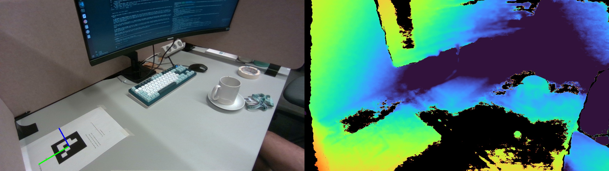

Overview
The data process produces a paired dataset: object manipulation demonstrations recorded in the real world, each paired with a simulated robot trajectory.
Task: pick up the mug and place it on the plate. The mug and plate are moved to a new random position by hand before each demonstration.
Environment setup

Real2sim
- Tools. Intel RealSense D405 camera (colour + depth, 30 fps), MediaPipe hand landmarker (21 points per hand per frame), LIBERO / robosuite sim with a Panda arm, controlled at 20 Hz.
- Hand in 3D. Each hand point's pixel + its D405 depth gives a 3D point, which the ArUco marker's pose moves into the table frame.
- Mug and plate. The D405 returns almost no depth on the white mug and saucer, so both are found from the hand: where I pinch is the mug rim, where I let go is over the plate. In sim the cup goes at a fixed spot and the plate at cup + (let-go point − pinch point).
- Retargeting.
- The gripper follows the pinch point (between thumb and index tips), not the wrist.
- The path is shifted so my pinch lands on the sim grasp point: the rim, one finger inside the mug, since the mug is wider than the gripper. No rotation or scaling.
- Gripper closes when thumb and index are under 2.5 cm apart, opens when over 3 cm after a 3 cm lift.
- Three rim-grasp rules: stay 8 cm above the rim until the gripper is within 1 cm of it sideways, then come down; pause 0.5 s to arrive and 0.5 s to close; after letting go, hold 0.25 s and rise 10 cm.
- Robot clock. While the robot pauses, the real video is held on the same frame (amber border below), so every robot step has a real frame to pair with.
- Success = the cup is on the plate 1 s after the replay. Only successful episodes are kept for training.
Demo 1
Demo 2
Raw hand path vs final process
| 165 recorded episodes | raw hand path | final process |
|---|---|---|
| no usable hand path (hand lost, no grasp found) | 14 | 14 |
| replayed in sim | 151 | 151 |
| cup on plate | 31 (19 %) | 100 (61 %) |
| failed | 134 | 65 |
Raw hand path: the gripper follows the pinch point with none of the three rules.
Episode 111418: raw fails, final succeeds
Action flows
- Tools. CoTracker3 (tracks points through the whole video), SAM 2 (finds the mug), MediaPipe (starts the hand points), D405 depth.
- Hand. 6 points: wrist, thumb tip, index tip and 3 knuckles. MediaPipe places them, CoTracker tracks them (restarted from MediaPipe every 0.5 s).
- Mug. SAM 2 finds the mug in the first frame; 8 points spread over its mask are tracked by CoTracker.
- 3D. Hand points use the D405 depth. The white mug has almost no depth, so its distance comes from a 4 cm-radius cylinder that moves with my pinch while I carry it.
- Hidden points (behind the hand or out of view) are filled in and flagged visible = 0.
- Samples. 10 Hz; each sample is the next 16 steps (1.5 s) of all 14 points. For training the flow is moved onto the robot's clock: it holds still while the robot pauses.
hand float32 [6, 16, 4] wrist, thumb tip, index tip, index / middle / pinky knuckle
cup float32 [8, 16, 4] 8 points on the mug
points × 16 steps at 10 Hz (now … +1.5 s) × (x, y, z, visible)
x, y, z in metres, table frame · visible = 0 → hidden, mask it
Flow on the robot's clock (what the dataset uses)
- The robot pauses where my hand does not (arriving and closing at the grasp, holding and rising after the release, the final 1 s). The real video is held on the same frame for those steps.
- The tracked flow is then read at the held video's times, so the points stand still while the video is held. Video, flow and robot data all have one row per robot step (20 Hz).
Data splits
| split | episodes | what it is | has |
|---|---|---|---|
| train | 80 | sim replay succeeded | video, flow, robot data |
| test | 20 | sim replay succeeded, held out | video, flow, robot data |
| failed | 46 | replayed, cup not on the plate | video, flow, robot data |
| not usable | 19 | hand lost or no grasp found: no replay | video (17 also flow) |
| total | 165 |
Train and test are the 100 successful episodes shuffled with seed 0. Robot steps at 20 Hz: 18,622 in train + test, 7,876 in failed.
Third-party dependencies
| tool | used for |
|---|---|
| Intel RealSense SDK (pyrealsense2 2.58) | D405 colour + depth recording, factory intrinsics |
| OpenCV 4.11 (ArUco) | marker detection and pose (table frame), video reading, drawing |
| MediaPipe Hand Landmarker 0.10 | 21 hand points per frame; starts the hand tracks |
| CoTracker3 (offline, commit 82e02e8) | tracks the 6 hand and 8 mug points through the video |
| SAM 2.1 Hiera-L (commit 2b90b9f) | mug mask in every frame; picks the mug points |
Limitations
- Pauses. They are part of the rim-grasp rules that lift the real2sim success from 19 % to 61 %, but holding the video still is only valid because the scene is static apart from my hand and the mug: nothing else moves on its own while the video is held.
- Flow vs robot actions. Retargeting changes the path: the rim-grasp rules add pauses and a descent from above, and the arm lags the target by about 0.2 s. So the action flow is not exactly what the robot did.
- Fixed grasp point. The robot always grasps the same spot on the rim, not where my hand grasped the mug.
- Mug and plate positions come from where I pinch and let go, not from calibrated 3D object detection (the D405 gives almost no depth on the white mug and saucer).
- Mug points are sampled from each episode's first-frame mask, so they sit in different places on the mug from one episode to the next (sometimes on the handle).
- Cup positions are clustered. 74 % of the successful episodes start with the cup between y = −20 and −50 cm, where 68 % of recordings succeed. Beyond −60 cm only 44 % succeed, and above −20 cm 1 of 4.